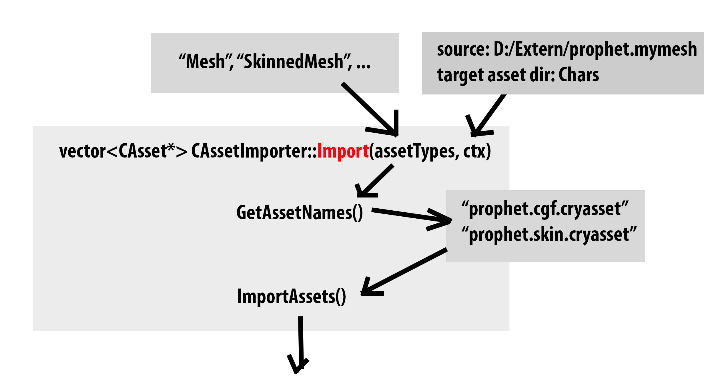

Relevant Files
- EditorCommon/AssetSystem/AssetImporter.{h,cpp}
- MeshImporter/AssetImporterFBX.{h,cpp}
- MeshImporter/AssetImporterImages.{h,cpp}
See also: CAsset, CAssetType, CAssetBrowser
What Is an Asset Importer?
Users think about their data in terms of assets, such as meshes, skeletons, animations, and so on, which are handled as a logical unit inside the Sandbox. There's a one-to-one relationship between the assets seen in the asset browser and cryasset files on disk. These files, however, do not store the actual data used by the engine, but merely store a list of references to data files. An asset of type Mesh, for example, might reference a data file of type cgf that stores the actual geometry. The data file types are specific to CryENGINE (click here for an overview of these types). An asset created in some DCC tool needs to be converted to one of CRYENGINE's data file formats before it can be used in the engine.
The job of an asset importer is to take a source file of some type and create an asset, which includes creating the cryasset file, as well as the necessary data files. Asset importers might be called by the Sandbox in different places. One of them is certainly the asset browser, which allows importing of assets. There may be multiple asset importers that handle different combinations of source file types and asset types. For example, there is one asset importer that creates all asset types from FBX files. New importers can be implemented in plugins.
Implementing an Asset Importer
In the following, we implement a simple asset importer (CMyMeshImporter) that imports source files of the fictional type mymesh and create Mesh assets.
When omitting include files and forward declarations, a minimal implementation of an asset importer looks as follows.
class CMyMeshImporter : public CAssetImporter{ DECLARE_ASSET_IMPORTER_DESC(CMyMeshImporter) // (1)public: virtual std::vector<string> GetFileExtensions() const override; // (2) virtual std::vector<string> GetAssetTypes() const override; // (3)private: virtual std::vector<string> GetAssetNames(const std::vector<string>& assetTypes, CAssetImportContext& ctx) override; // (4) virtual std::vector<CAsset*> ImportAssets(const std::vector<string>& assetNames, CAssetImportContext& ctx) override; // (5)}; |
Every asset importer is a sub-class of CAssetImporter. The macro (1) handles details of the IClassDesc system, and essentially makes the importer visible to the Sandbox. There are four methods that every importer needs to implement.
(1) and (2) are called by Sandbox to query what source file type and what asset types the importer supports, respectively. In this example, we only create Mesh assets from the fictional mymesh format, so the implementation looks like this:
std::vector<string> CMyMeshImporter::GetFileExtensions() const{ return { "mymesh" }; // File extensions are lower-case and without leading dot.}std::vector<string> CMyMeshImporter::GetAssetTypes() const{ return { "Mesh" };} |
Note that the other two methods, (4) and (5) are private. They are not part of the public interface, but implementation details of the asset importer. The CAssetImporter class has a single method for importing, CAssetImporter::Import(), that implements the governing logic of importing assets in a two-phase process. First, it gets a list of potentially imported asset names and processes it. Then, a subset of that list is actually imported.

GetAssetNames is passed a list of requested asset types and returns a list of asset names that might be written. However, it must neither modify existing assets nor create new ones, because some additional steps might be necessary before touching files on disk. For example, the files need to be checked out for version control. The list of asset names, or, more generally, a subset of it, is then passed, ImportAssets which then actually writes the files.
std::vector<string> CMeshImporter::GetAssetNames(const std::vector<string>& assetTypes, CAssetImportContext& ctx){ const string basename = PathUtil::GetFileName(ctx.GetInputFilePath()); // (6) std::vector<string> assetNames; for (const string& type : assetTypes) { if (type == "Mesh") { assetNames.push_back(basename + ".cgf.cryasset"); } } return assetNames;}std::string<CAsset*> CMeshImporter::ImportAssets(const std::vector<string>& assetNames, CAssetImportContext& ctx){ std::vector<CAsset*> importedAssets; for (const string& name : assetNames) { importedAssets.push_back(ImportInternal(name)); } return importedAssets;} |
Each of these methods is passed an import context that holds data of for importing process of a single source file. The path to the source file, and the path to the output directory, for example, can be queried from the context (6).
Implementation Details of the FBX Importer
The FBX importer (class CAssetImporterFBX) delegates the majority of the work to the Resource Compiler (RC). The RC is called as a separate process that takes some arguments and produces some output files. It writes the data files, as well as the cryasset files. Unfortunately, the RC is pretty much a black-box and a caller cannot tell in advance what files are going to be written, or how many. This stands in conflict with the requirements of the CAssetImporter interface, which asks the FBX importer for a list of potentially written asset files for a given pair of the source file and asset types.
To solve this issue, the FBX importer always imports an asset to a temporary directory and then searches for cryasset files.
As the RC does most of the work, the importing of most asset types looks similar to this:
void CAssetImporterFBX::ImportMesh(CAssetImportContext& ctx){ InitMetaData(); // Basically arguments passed to RC. CallRC(assetPath); // Calls RC to create asset in temporary directory.} |
Then, all cryasset files in the temporary directory are listed. The actual assets of type CAsset* are created by loading these cryassets from disk. The places you can do this are limited by design, but one possibility is to use CAssetImportContext::LoadAssset.
FBX files might contain embedded media, including textures. In this case, texture importing is delegated to the image importer.
Implementation Details of the Image Importer
The image importer (class CAssetImporterImage) creates texture assets from image formats like png, jpg, or bmp. It first converts an image to TIF, and then invokes the RC to create a CryTif. After this, the CryTif is converted to dds, as usual.
For TIFconversion, we use a third-party application called ImageMagick (IM), which we ship with the engine (Tools/third_party/imagemagick). IM is called as a separate process, in the same way, we call the RC. IM comes with a lot of coders that support a lot of formats, but most of them make some assumptions about the environment. Therefore, we only support a known white-list of formats for texture importing that includes the most commonly used image interchange formats.